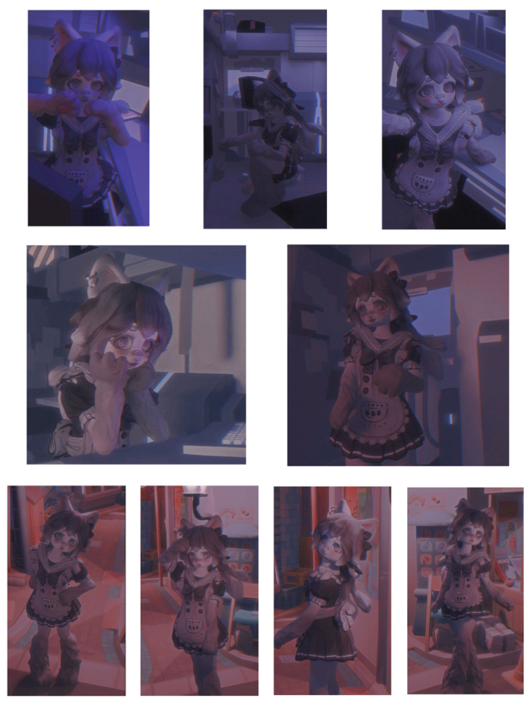
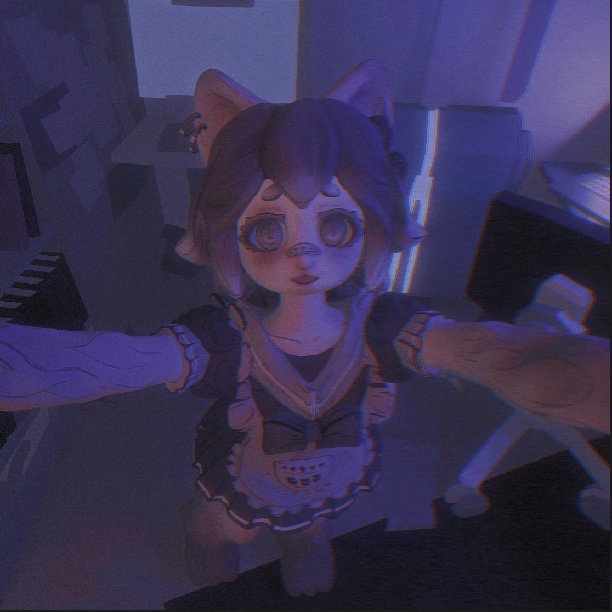
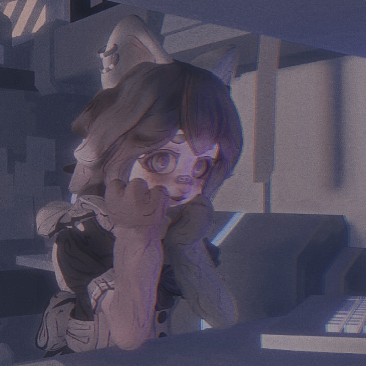

CURRENT PROJECT: LIKE
Concept
"LIKE" showcases a half-human, half-cat character in a series of selfies, blending surreal settings with shifting aesthetics. Exploring identity, self-presentation, and societal expectations, it critiques the performative nature of social media while celebrating its potential for self-expression, inviting viewers to reflect on digital validation and individuality.
Seeking Validation
"is this how I want to look like? is this who I want to be?" In this phase, I aim to make a sequence dancing animations and stream them on social media, discussing how social media has this way of holding up a mirror--reflecting what society expects of us.
Questioning Identity
"do I actually like this? Is this really me?" Coming to the reallization moment of questioning the purposes, this is a battle between expectation and reflection. Right here the character starts to develop their personality through programming.
Embracing Authencity

"what does it mean to like yourself?" Hopefully we all begins to let go of societal expectations, express who we truly are instead of performing for others. To demonstrate the organic and primitive personalities, I will make the character into an avator driven by the programmed AI.
Personality
"do you perform for others?" With the given personality, I will be challenging towards this AI and ask the AI to consider and form opinions on current social issues with the integration of psychology, for which they will now have moods and personal opinions when interacting.
Socialization
"do you dare to be yourself?" To be more connected to our world and be more auhentic, I will introduce the world setting and some other AIs with unique personalities to the existing AI, and see how they performs under a simulated society, explore the effects of socialization.